2019.03.22
40423207-5
3D零組件繪製與組立
我被分配到的工作是，繪製零件Base Axis Spring and Assembly.
First version:
Second version:
Third version:
繪製過程描述
First version
1.按照老師給的plarer尺寸設計Base的形狀與公差。
2.將另一組員繪製的player與我繪製的Base and Axis做組立。
3.與組員討論繪製結果，組員提出無接球機構、把手不美觀、球員移動距離設定不良等問題。
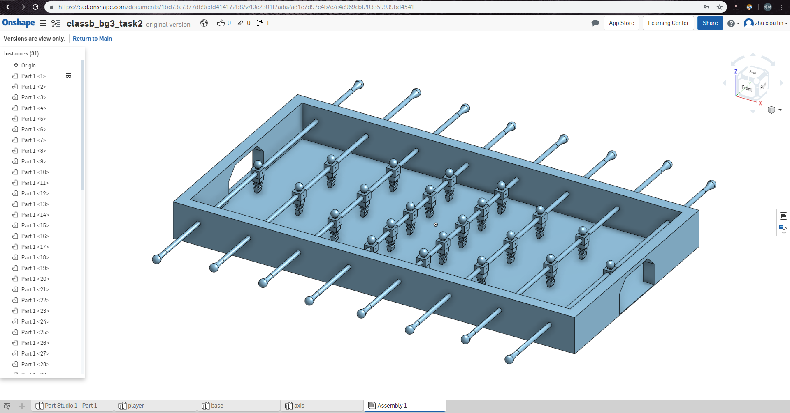
Second version:
1.繪製一個接球容器，加大把手與優化形狀，加長桿子長度。
2.改變plarer約束的距離。
3.繪製完與組員再次討論，我們發現把球取出時會有困難，與最外側人偶應該要多加零件去約束人偶移動距離，同時緩衝對人偶造成的撞擊。

Third version:
1.新增了一個開門機構與固定銷。
2.新增彈簧。
3.立體繪製與組立到第三版本暫時結束，下兩週會往v-rep模擬任務作前進。
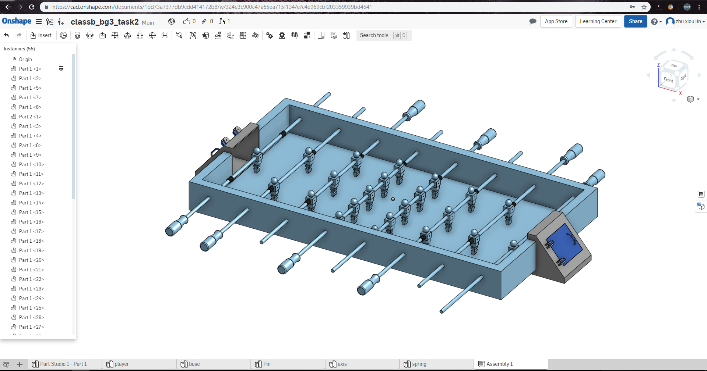
40423160-5
這個禮拜是第一次分組作業, 我被分配到的任務是畫手足球員
參考老師給的尺寸
http://mde.tw/cd2019/content/%E5%AF%A6%E7%BF%92%E4%BB%BB%E5%8B%99%E4%BA%8C.html
然後作稍為的微調
這是我畫的足球員
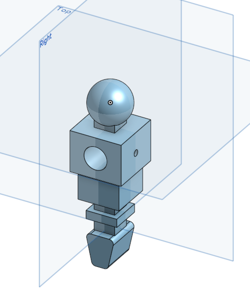
畫完後就讓繪製足球架的同學去加入到手足球系統裡面
最後跟小組完成的手足球
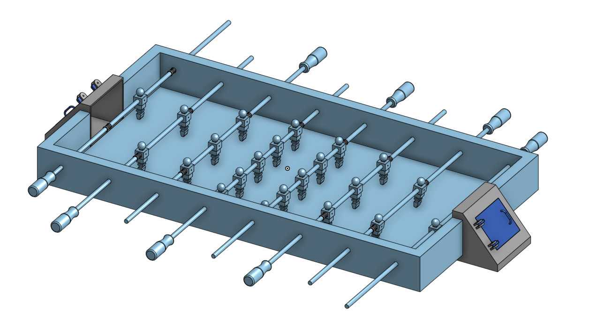
40423131-5
這禮拜要做老師給的手足球模擬~~~
課堂網址:
http://mde.tw/cd2019/content/%E5%AF%A6%E7%BF%92%E4%BB%BB%E5%8B%99%E4%BA%8C.html
我在小組中，是分配在繪製【手足球-球員】的工作
 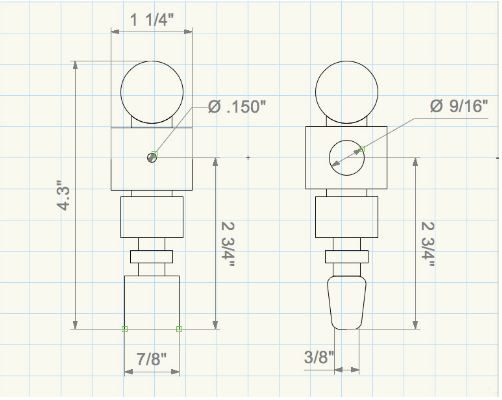
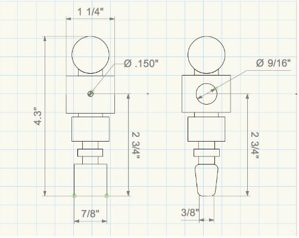
上圖是網站給的尺寸，但其實尺寸不足很多，所以大概抓個尺寸去補足。
 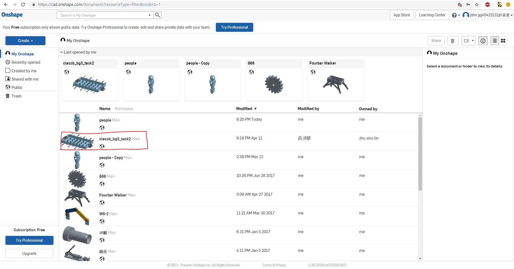
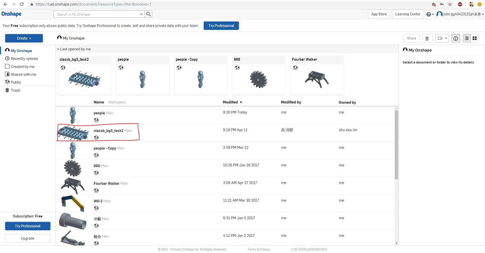
我們利用Onshape來繪製，好處在於可以【協同】，在線上繪製及組裝完成最後成品。
1.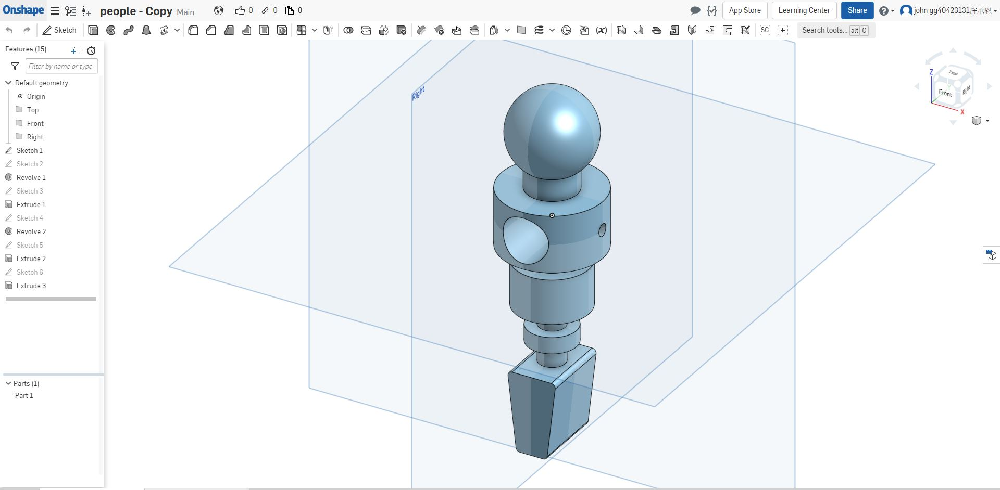
2. 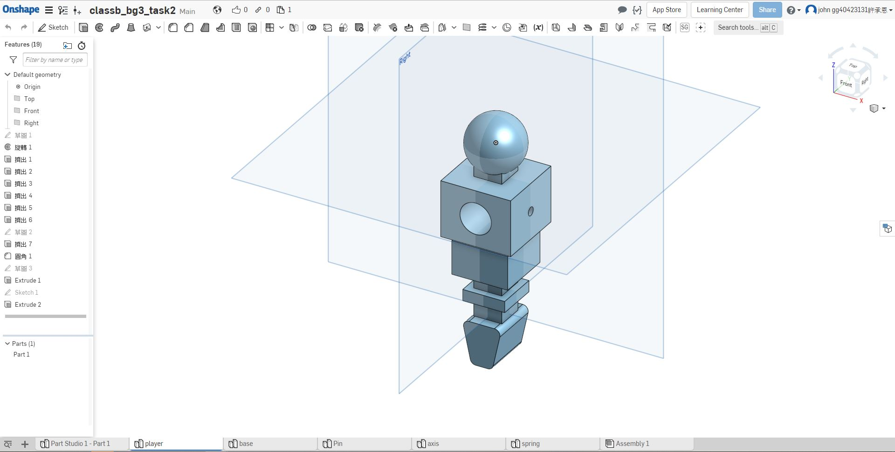
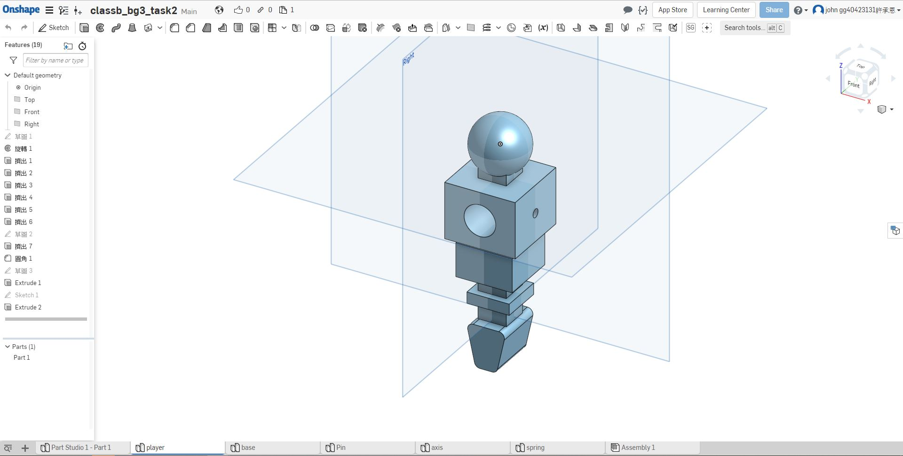
我和另一位組員使用不同尺寸，做出兩種 身體 不同形狀的球員。(圖1、2)
3. 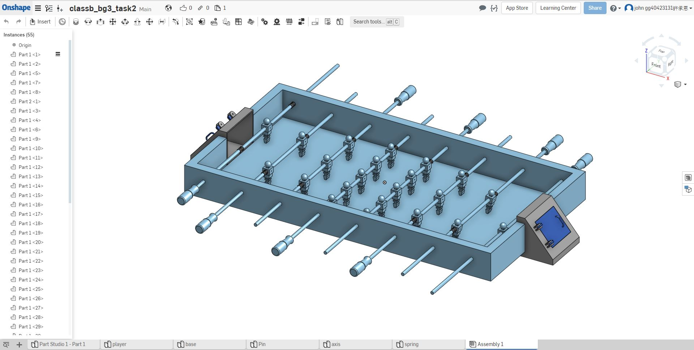
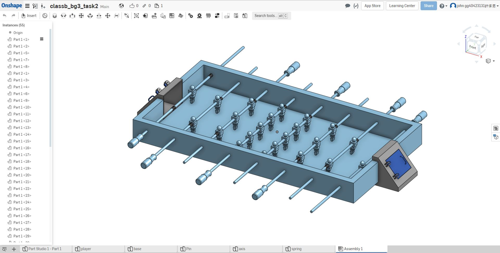
最終協同組裝完工的手足球桌。(圖3)
40623207-5
本週上課分配手足球工作後，看了許多有關手足球的影片。下課前老師讓我們自評，為今天自己做的事打個成績。
40623218-5
我被分配到投影片和報告，因為剛開始還沒有事情，所以自己就去看看V-rep。
40623219-5
在其組員開始做自己工作的同時，我開始去摸索v-rep裡面的其他功能，並且去看老師所提共的英文解說。
40623231-5
這禮拜分工大都分完了，我被分到投影片和報告
的工作，因為剛開始沒甚麼我的事所以先幫忙組
員用V-rep的模擬。
40623237-5
第五周開始用v-rep模擬實習任務二(BubbleRob tutorial)，剛開始模擬感測器並不會做動，也就是感測到物體後並不會轉向，後來從感測器的部分來找出問題發現有幾個選項並沒有改動到也沒勾選導致感測器無法做動，修正後皆能正常做動。因無拍攝過程，所以只有成品及做動畫面。

40623241-5
心得：今天是第五週上課，既分組後第一次開放充裕的時間讓大家在課堂上討論，而我們這組也快速地選了組長並分配工作，這是我選維護網誌，選一個沒做過的工作試試看，有點不太知道怎麼上手，但相信只要每週有持續更新就會漸漸有東西表現出來!
40623246-5
分配完工作，確定每個組員要做的事情，而我是製作Blog，我需要跟製作網站的攜手合作，才能同時在網頁和Blog都能呈現的好的成果出來。
2019.03.15 << Previous Next >> 2019.03.29